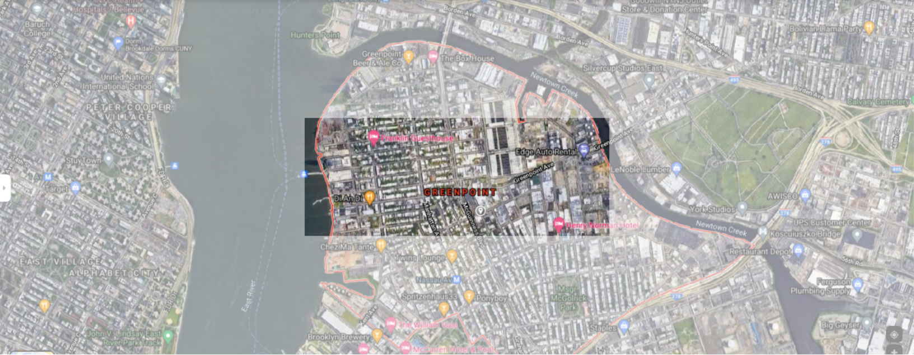
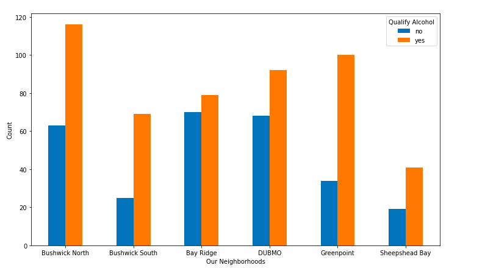

Greenpoint

zipcode: 11222, 11249
Public Transit: Greenpoint is served by the G train at Greenpoint and Nassau Avenues. There are buses heading to Long Island City and nearby northern Brooklyn.
Greenery and Shade: there is a lot of park space along the waterfront, but not many trees on the streets.
Safety: Greenpoint’s proximity to Manhattan and Williamsburg make it very safe. However there is a lot of chronic alcoholism.

This is a breakdown of the restaurants that serve alcohol in our 6 Brooklyn neighborhoods. They support our previous analysis of Brooklyn as a whole. Specifically, our observation that Bay Ridge would lower Brooklyn’s percentage is reflected in their 51% of restaurants qualifying for alcohol shown here.